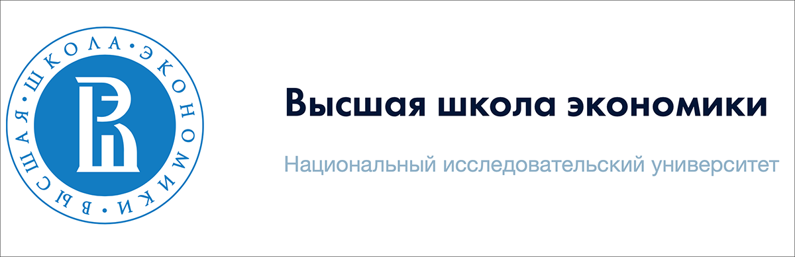

О Высшей Школе Экономики
Высшая Школа Экономики (ВШЭ) известна своими выдающимися достижениями в области образования и науки. На этой странице вы узнаете о нашей истории, миссии, достижениях и многом другом.
История ВШЭ
ВШЭ была основана в 1992 году с целью реформирования системы высшего образования в России. С момента своего основания университет постоянно развивается и улучшает свои образовательные и научные программы.

Историческое здание ВШЭ
К началу страницыМиссия и Ценности
Миссия ВШЭ заключается в создании, распространении и сохранении знаний, а также в подготовке специалистов, способных внести значительный вклад в развитие общества. Основные ценности ВШЭ включают академическую свободу, честность и социальную ответственность.
Миссия ВШЭ
К началу страницыДостижения
На протяжении многих лет ВШЭ добилась значительных успехов в области образования и науки. Наши студенты и преподаватели регулярно участвуют в международных конференциях, публикуют научные статьи в престижных журналах и выигрывают различные награды.
Достижения ВШЭ
К началу страницыПартнеры и Сотрудничество
ВШЭ активно сотрудничает с ведущими университетами и исследовательскими центрами по всему миру. Мы участвуем в международных проектах, обменных программах и научных исследованиях, что позволяет нашим студентам и преподавателям расширять свои знания и опыт.
Партнеры ВШЭ
К началу страницы